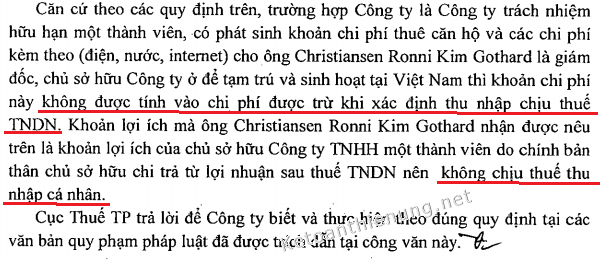

Chi phí thuê nhà cho chuyên gia nước ngoài có được trừ tính thuế TNDN? Thuế GTGT tiền thuê nhà có được khấu trừ? Tiền thuê nhà cho người nước ngoài có tính thuế TNCN? Kế toán Diệu Tâm xin trích các văn bản quy định về việc đó.
1. Chi phí thuê nhà cho chuyên gia nước ngoài tính vào chi phí thuế TNDN:
Theo Điều 4 Thông tư 96/2015/TT-BTC và được sửa đổi bởi Khoản 2 Điều 3 Thông tư 25/2018/TT-BTC quy định:
“1. Trừ các khoản chi không được trừ nêu tại Khoản 2 Điều này, doanh nghiệp được trừ mọi khoản chi nếu đáp ứng đủ các điều kiện sau:
a) Khoản chi thực tế phát sinh liên quan đến hoạt động sản xuất, kinh doanh của doanh nghiệp.
b) Khoản chi có đủ hoá đơn, chứng từ hợp pháp theo quy định của pháp luật.
c) Khoản chi nếu có hoá đơn mua hàng hoá, dịch vụ từng lần có giá trị từ 20 triệu đồng trở lên (giá đã bao gồm thuế GTGT) khi thanh toán phải có chứng từ thanh toán không dùng tiền mặt.
2. Các khoản chi không được trừ khi xác định thu nhập chịu thuế bao gồm:
2.6. Chi tiền lương, tiền công, tiền thưởng cho người lao động thuộc một trong các trường hợp sau:
b) Các Khoản tiền lương, tiền thưởng cho người lao động không được ghi cụ thể Điều kiện được hưởng và mức được hưởng tại một trong các hồ sơ sau: Hợp đồng lao động; Thoả ước lao động tập thể; Quy chế tài chính của Công ty, Tổng công ty, Tập đoàn; Quy chế thưởng do Chủ tịch Hội đồng quản trị, Tổng giám đốc, Giám đốc quy định theo quy chế tài chính của Công ty, Tổng công ty.
- Trường hợp doanh nghiệp ký hợp đồng lao động với người nước ngoài trong đó có ghi khoản chi về tiền học cho con của người nước ngoài học tại Việt Nam theo bậc học từ mầm non đến trung học phổ thông được doanh nghiệp trả có tính chất tiền lương, tiền công và có đầy đủ hoá đơn, chứng từ theo quy định thì được tính vào chi phí được trừ khi xác định thu nhập chịu thuế thu nhập doanh nghiệp.
- Trường hợp doanh nghiệp ký hợp đồng lao động với người lao động trong đó có ghi khoản chi về tiền nhà do doanh nghiệp trả cho người lao động, khoản chi trả này có tính chất tiền lương, tiền công và có đầy đủ hoá đơn, chứng từ theo quy định thì được tính vào chi phí được trừ khi xác định thu nhập chịu thuế thu nhập doanh nghiệp.
- Trường hợp doanh nghiệp Việt Nam ký hợp đồng với doanh nghiệp nước ngoài trong đó nêu rõ doanh nghiệp Việt Nam phải chịu các chi phí về chỗ ở cho các chuyên gia nước ngoài trong thời gian công tác ở Việt Nam thì tiền thuê nhà cho các chuyên gia nước ngoài làm việc tại Việt Nam do doanh nghiệp Việt Nam chi trả được tính vào chi phí được trừ khi xác định thu nhập chịu thuế thu nhập doanh nghiệp."
----------------------------------------------------------------------------------------
Kết luận:- Chi phí tiền thuê nhà cho người lao động, chi phí thuê nhà cho chuyên gia nước ngoài được tính vào chi phí được trừ khi tính thuế TNDN nếu có hóa đơn, chứng từ và được quy định cụ thể trong quy chế tiền lương thưởng của công ty (hoặc hợp đồng lao động)
- Nếu thuê nhà của Công ty cần: Hợp đồng, hóa đơn, chứng từ thanh toán
- Nếu thuê nhà của cá nhân cần: Hợp đồng, chứng từ thanh toán; chứng từ nộp tiền thuế thay (Nếu trên hợp đồng ghi bên thuê nộp thuế thay) -> Nhưng tùy thuộc vào giá trị thuê nhà...
Chi tiết xem thêm: Chi phí thuê nhà của cá nhân
----------------------------------------------------------------
Theo điều 14 Thông tư 219/2013/TT-BTC:
“Điều 14. Nguyên tắc khấu trừ thuế giá trị gia tăng đầu vào:
- Trường hợp cơ sở kinh doanh có các chuyên gia nước ngoài sang Việt Nam công tác, giữ các chức vụ quản lý tại Việt Nam, hưởng lương tại Việt Nam theo hợp đồng lao động ký với cơ sở kinh doanh tại Việt Nam thì cơ sở kinh doanh không được khấu trừ thuế GTGT của khoản tiền thuê nhà cho các chuyên gia nước ngoài này.
- Trường hợp các chuyên gia nước ngoài vẫn là nhân viên của doanh nghiệp ở nước ngoài, chịu sự điều động của doanh nghiệp ở nước ngoài, được doanh nghiệp ở nước ngoài trả lương và hưởng các chế độ của doanh nghiệp ở nước ngoài trong thời gian sang Việt Nam công tác, giữa doanh nghiệp ở nước ngoài và cơ sở kinh doanh tại Việt Nam có hợp đồng bằng văn bản nêu rõ doanh nghiệp tại Việt Nam phải chịu các chi phí về chỗ ở cho các chuyên gia nước ngoài trong thời gian công tác ở Việt Nam thì thuế GTGT của khoản tiền thuê nhà cho các chuyên gia nước ngoài làm việc tại Việt Nam do cơ sở kinh doanh tại Việt Nam chi trả được khấu trừ.”
“9. Số thuế GTGT đầu vào không được khấu trừ, cơ sở kinh doanh được hạch toán vào chi phí để tính thuế thu nhập doanh nghiệp hoặc tính vào nguyên giá của tài sản cố định, trừ số thuế GTGT của hàng hóa, dịch vụ mua vào từng lần có giá trị từ hai mươi triệu đồng trở lên không có chứng từ thanh toán không dùng tiền mặt.”
--------------------------------------------------------------
Kết luận:- Nếu Doanh nghiệp bạn thuê nhà cho chuyên gia nước ngoài sang công tác, giữ chức vụ quản lý, hưởng lương tại VN thì không được khấu trừ thuế GTGT của khoản tiền thuê nhà này. (Khoản tiền thuế GTGT không được khấu trừ thì hạch toán vào chi phí)
- Nếu Doanh nghiệp bạn thuê nhà cho chuyên gia nước ngoài nhưng là nhân viên của DN nước ngoài được điều động và Doanh nghiệp nước ngoài trả lương thì được khấu trừ thuế GTGT (nếu trong hợp đồng ghi rõ khoản này)
-----------------------------------------------------------------------
Theo Khoản 2 Điều 11 Thông tư 92/2015/TT-BTC quy định:
Các khoản thu nhập chiu thuế:
“đ.1) Tiền nhà ở, điện, nước và các dịch vụ kèm theo (nếu có), không bao gồm: khoản lợi ích về nhà ở, điện nước và các dịch vụ kèm theo (nếu có) đối với nhà ở do người sử dụng lao động xây dựng để cung cấp miễn phí cho người lao động làm việc tại khu công nghiệp; nhà ở do người sử dụng lao động xây dựng tại khu kinh tế, địa bàn có điều kiện kinh tế xã hội khó khăn, địa bàn có điều kiện kinh tế xã hội đặc biệt khó khăn cung cấp miễn phí cho người lao động làm việc tại đó.
Trường hợp cá nhân ở tại trụ sở làm việc thì thu nhập chịu thuế căn cứ vào tiền thuê nhà hoặc chi phí khấu hao, tiền điện, nước và các dịch vụ khác tính theo tỷ lệ giữa diện tích cá nhân sử dụng với diện tích trụ sở làm việc.
Khoản tiền thuê nhà, điện nước và các dịch vụ kèm theo (nếu có) đối với nhà ở do đơn vị sử dụng lao động trả thay tính vào thu nhập chịu thuế theo số thực tế trả thay nhưng không vượt quá 15% tổng thu nhập chịu thuế phát sinh (chưa bao gồm tiền thuê nhà, điện nước và dịch vụ kèm theo (nếu có)) tại đơn vị không phân biệt nơi trả thu nhập.”
--------------------------------------------------------------------------------------
Kết luận:- Khoản tiền thuê nhà cho người nước ngoài mà Doanh nghiệp trả thay là khoản thu nhập chịu thuế TNCN nhưng không vượt quá 15% tổng thu nhập chịu thuế (chưa bao gồm tiền thuê nhà)
Ví dụ: Mr. bill gates lương tháng là 5.000$ (chưa tính tiền thuê nhà) và ông không có khoản nào được miễn thuế, tiền thuê nhà cho ông là 1.000$/tháng.
- Vì ông không có khoản nào được miễn thuế nên Thu nhập chịu thuế của ông (chưa bao gồm tiền thuê nhà) là: 5.000$
-> Tiền thuê nhà phải chịu thuế TNCN tối đa:
= 15% X 5.000 = 750$
(Tính vào thu nhập chịu thuế không vượt quá 15% tổng thu nhập chịu thuế (chưa bao gồm tiền thuê nhà))
=> Tổng thu nhập chịu thuế:
= 5.000 + 750 = 5.750 $
Để tính tiếp số tiền thuế TNCN phải nộp mời các bạn xem thêm:
- Nếu là cá nhân cứ trú thi các bạn tính như bình thường: Cách tính thuế thu nhập cá nhân
- Nếu là cá nhân không cư trú xem thêm: Cách tính thuế TNCN cho người nước ngoài
-------------------------------------------------------------------------
Tham khoả thêm: Chi phí thuê nhà cho Giám đốc công ty MTV không được trừ
Chi phí thuê nhà cho giám đốc Cty TNHH 1TV do cá nhân đó là chủ: Không được trừ khi tính thuế TNDN – Không chịu thuế TNCN.

(Theo Công văn 5636/CT-TTHT ngày 14/6/2018 của Cục Thuế TP. HCM)
Xem thêm: Tiền lương giám đốc Công ty TNHH MTV
------------------------------------------------------------------------
Kế toán Diệu Tâm xin chúc các bạn thành công!
----------------------------------------------------------------------------
----------------------------------------------------------------------------